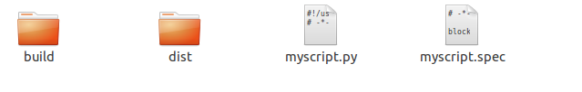
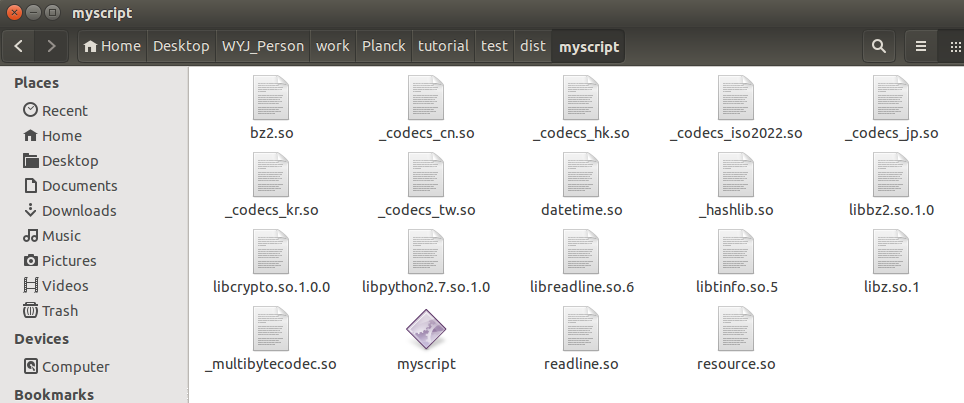
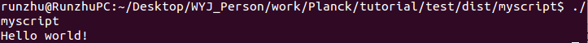
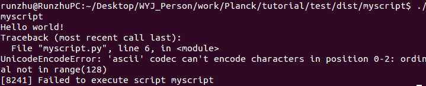
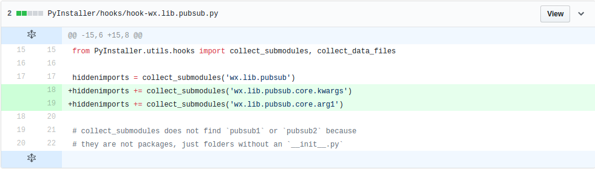
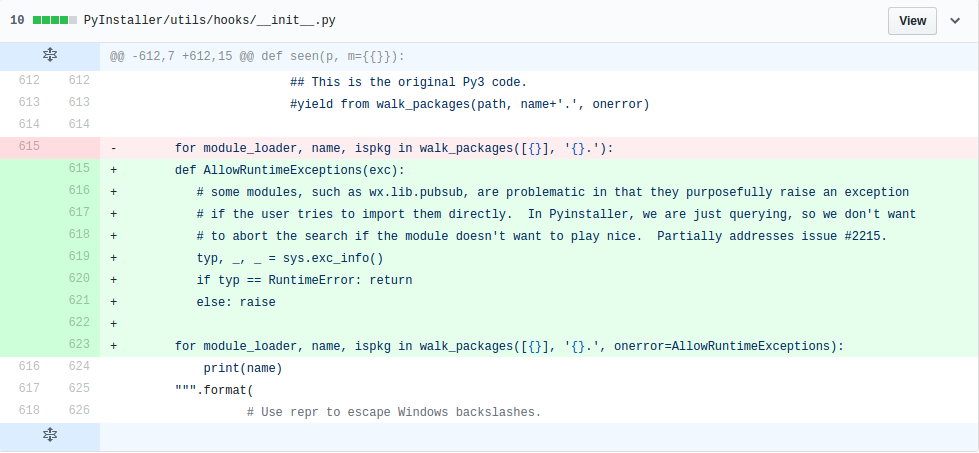
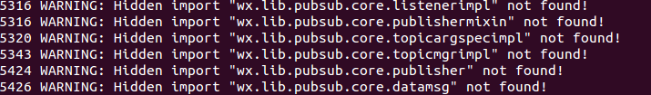

PyInstaller将Python应用程序及其所有依赖项打包到一个文件夹或文件中，打包完的程序就可以在没有安装Python解释器或依赖的机器上运行了。Pyinstaller通过读取你编写的python脚本，分析你的代码去收集每一个需要的模块和库，包括python解释器，并将它们复制下来后与你的python脚本放在单个文件夹或单个可执行文件中． PyInstaller支持Python 2.7和Python 3.3-3.6。可以在Windows、Mac OS X和Linux上使用，但是并不是跨平台的，而是说你要是希望打包成.exe文件，需要在Windows系统上运行PyInstaller进行打包工作，打包成mac app，需要在Mac OS上使用。
pip install pyinstaller
一般会安装在/use/local/lib/python2.7/dist-packages/Pyinstaller
1. 常规使用.
对于大多数的工程项目，可以用以下方式打包成可执行文件，默认打包方式是生成一个文件夹，文件夹中包含所有依赖项，以及可执行文件。打包成文件夹的好处就是debug的时候可以清楚的看到依赖项有没有包含。另一个好处是更新的时候，只需要更新可执行文件就可以了。当然缺点也很明显，不方便，不易管理。
pyinstaller myscript.py
如果想打包成一个可执行文件,可以这样
pyinstaller --onefile myscript.py
打包成一个文件相对于文件夹更容易管理。坏处运行相对比较慢。这个文件中包含了压缩的依赖文件拷贝（.so文件）。
2. 以打包myscript.py为例，说明整个打包过程.
myscript.py的内容如下：
#!/usr/bin/python
# -*- coding: utf-8 -*-
print 'Hello world!'
myscript.py位于test目录下，若将其打包成单个文件夹，可在terminal上输入
pyinstaller myscript.py
 生成与myscript同名的myscript.spec文件以及两个文件夹build和dist． 位于dist目录下的myscript文件夹下可以看到可执行文件myscript．  在终端上输入
./myscript
即可执行文件．可在终端上看到 
如果想将全部依赖及脚本打包成一个可执行文件，可以用以下参数
pyinstaller --onefile myscript.py
3. 常见异常处理.
如果myscript.py的内容如下：
#!/usr/bin/python
# -*- coding: utf-8 -*-
print 'Hello world!'
print u'你好，世界！'
即使按以上命令生成可执行文件成功，也会出现运行错误，错误如下： 
解决办法，增加三行代码：
#!/usr/bin/python
# -*- coding: utf-8 -*-
import sys
reload(sys)
sys.setdefaultencoding('utf-8')
print 'Hello world!'
print u'你好，世界！'
然后重新按以上步骤生成可执行文件，即可运行成功．
4. spec文件设置.
注意到，生成的myscript.spec，用于设置可选参数，包含数据文件，输出路径，隐藏导入等等．
一般生成的文件内容如下：
# -*- mode: python -*-
block_cipher = None
a = Analysis(['myscript.py'],
pathex=['/home/runzhu/Desktop/WYJ_Person/work/Planck/tutorial/test'],
binaries=[],
datas=[],
hiddenimports=[],
hookspath=[],
runtime_hooks=[],
excludes=[],
win_no_prefer_redirects=False,
win_private_assemblies=False,
cipher=block_cipher)
pyz = PYZ(a.pure, a.zipped_data,
cipher=block_cipher)
exe = EXE(pyz,
a.scripts,
exclude_binaries=True,
name='myscript',
debug=False,
strip=False,
upx=True,
console=True )
coll = COLLECT(exe,
a.binaries,
a.zipfiles,
a.datas,
strip=False,
upx=True,
name='myscript')
如果想将myscript.py只生成myscript.spec，可以用以下命令生成spec文件．
pyi-makespec myscript.py
生成的spec文件已经包含了大多数命令选项．当你从spec文件构建可执行文件时，那些命令选项是不能被改变，即当你用命令行给可选参数时，仍然无法改变spec文件上的可选参数．只能通过修改spec文件的内容去更改可执行文件的一些属性，修改完生成的myscript.spec后，可以用
pyinstaller myscript.spec
生成可执行文件．
Pyinstaller做的第一件事情是生成一个spec文件(本例中是myscript.spec文件)，可以用--specpath=选项指定该文件生成的路径．
spec文件告诉Pyinstaller怎样处理你的脚本．它编码脚本名称以及给予pyinstaller命令的大部分选项。spec文件实质上是可执行的python代码．Pyinstaller通过执行spec文件的内容去构建应用程序．
对于大多数使用Pyinstaller的情况下是不需要修改spec文件，有四种情况需要修改spec文件：
a. 当应用程序需要绑定数据文件时，例如读取外部文件．
b. 当您想要包含PyInstaller从其他来源不知道的运行时库（.dll或.so文件）时．
c. 当需要将Python运行时的选项添加到可执行文件时。
d. 当需要创建具有合并的公共模块的多路程序包时。
spec文件创建了四个类的实例化，这四个类分别是Analysis, PYZ, EXE以及COLLECT．
Analysis类分析所有导入和其他依赖关系．Analysis第一个参数是需要生成可执行文件的python脚本，binaries=[]表示增加脚本所需的二进制文件，例如一些.so或.dll文件．通常Pyinstaller会分析导入的模块然后将.so和.dll库自动的包含，但有时后Pyinstaller不清楚哪个模块是否已导入，这时候你可以用hiddenimports=[]来包含未导入的模块，但即使这样做也未必能寻找到所有的依赖关系．
datas=选项用于增加非二进制文件，例如你的脚本程序需要读取src目录下的config.yml，on.png，可以这样表示datas=[('src/config.yml', '.'), ('src/on.png', '.')]．
数据文件列表是一个元组列表，每个元组有两个值，两个值均是字符串．其中第一个指明包含的数据文件，第二个指明运行时包含数据文件的文件夹．
PYZ类用于将a.pure(脚本所需的python模块)的所有依赖存档打包．
EXE类用于分析脚本和PYZ存档，然后构建可执行文件．
COLLECT类从所有其他部分创建输出文件夹．
rc.py，读取的外部文件主要有res/on.png, res/off.png， config/conf.yml, config/robot_cmd.dat，以及编写的模块放在src目录下．首先执行命令pyi-makespec rc.py生成rc.spec，然后修改如下：
# -*- mode: python -*-
block_cipher = None
added_files = [('/home/runzhu/Desktop/WYJ_Person/work/Planck/LuaEditorOptimization/GUI2/data/robot_cmd.dat', './data'),
('/home/runzhu/Desktop/WYJ_Person/work/Planck/LuaEditorOptimization/GUI2/config/conf.yml', './config'),
('/home/runzhu/Desktop/WYJ_Person/work/Planck/LuaEditorOptimization/GUI2/res/on.png', './res'),
('/home/runzhu/Desktop/WYJ_Person/work/Planck/LuaEditorOptimization/GUI2/res/off.png', './res')]
a = Analysis(['rc.py'],
pathex=['/home/runzhu/Desktop/WYJ_Person/work/Planck/tutorial/GUI2'],
binaries=[],
datas=added_files,
hiddenimports=[],
hookspath=[],
runtime_hooks=[],
excludes=[],
win_no_prefer_redirects=False,
win_private_assemblies=False,
cipher=block_cipher)
pyz = PYZ(a.pure, a.zipped_data,
cipher=block_cipher)
exe = EXE(pyz,
a.scripts,
exclude_binaries=True,
name='rc',
debug=False,
strip=False,
upx=True,
console=True )
coll = COLLECT(exe,
a.binaries,
a.zipfiles,
a.datas,
strip=False,
upx=True,
name='rc')
执行
pyinstaller rc.spec
即可生成dist/rc/rc可执行文件．运行./rc即可执行打包后的GUI2．
但是，请注意，由于GUI2用到了wx.lib.pubsub这个模块，如果直接生成可执行文件，则会报出以下错误．
no module named publisher problem appears.
这是由于pubsub这个模块的机制比较特殊，Pyinstaller无法导入，幸好由于踩这个坑的人太多，Pyinstaller开发小组已经将这个issue修复．
解决办法：
进入安装Pyinstaller文件的目录下，例如我的系统上用pip installe pyinstaller命令，Pyinstaller就安装在/use/local/lib/python2.7/dist-packages上，进入该目录下的PyInstaller/hooks/hook-wx.lib.pubsub.py,增加两行如下：

进入PyInstaller/utils/hooks/__init__.py，作如下修改：

修改完后，重复以上生成可执行文件的步骤，尽管仍然会提示缺乏信息，如下

但不影响可执行文件的正常运行，经过在虚拟机上的纯净系统上测试执行，可以运行打包后的可执行文件．